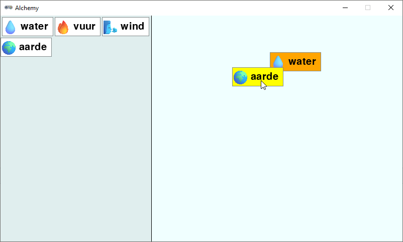
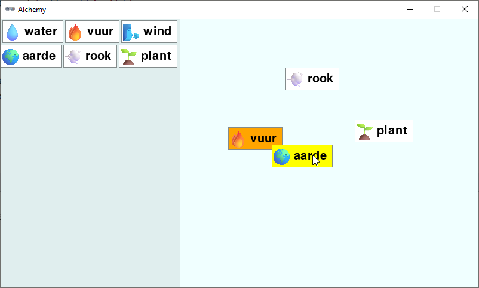

4.10. Elementen combineren#
Er ontbreekt nog één cruciaal onderdeel van het spel: de mogelijkheid om elementen te combineren. Wanneer de speler een element card op een andere element card dropt, moeten we controleren of er een recept voor die combinatie bestaat. Als dat zo is, moeten we het nieuwe element tonen en de twee oorspronkelijke elementen verwijderen.
Om te beginnen voegen we een nieuwe variabele toe, waarin we de index van de element card gaan opslaan die de speler wil combineren met de element card die de speler op dat moment aan het slepen is. We noemen deze variabele other en zetten hem standaard op -1:
38# VARIABLES
39
40dragging = False
41dragged = {}
42other = -1
In de on_mouse_move() functie controleren we of de card die de speler aan het slepen is, contact maakt met een andere card in de workbench. Als dat zo is, slaan we de index van die card op in de other variabele:
120def on_mouse_move(pos):
121 global other
122 if dragging:
123 dragged['rect'].x = pos[0] - dragged['click_pos'][0]
124 dragged['rect'].y = pos[1] - dragged['click_pos'][1]
125 for index, card in enumerate(workbench):
126 if dragged['rect'].colliderect(card['rect']):
127 other = index
128 return
129 other = -1
De enumerate() functie is handig omdat we hiermee in de for loop zowel de index als de waarde van elk element in de workbench lijst kunnen krijgen. In regel 126 checken we mogelijke collisions tussen de dragged card en de cards in de workbench. Als er een collision is, slaan we de index van die card op in de other variabele en we verlaten de functie. Als de for loop helemaal is doorlopen en er waren geen collisions, dan zetten we other terug op -1.
Om aan de speler duidelijk te maken dat de card die hij aan het slepen is, een andere card raakt, kunnen we die card een andere kleur geven. We doen dit in de draw_workbench() functie:
166def draw_workbench():
167 for index, card in enumerate(workbench):
168 if index == other:
169 draw_element_card(card['id'], card['rect'].topleft, bgcolor='orange')
170 else:
171 draw_element_card(card['id'], card['rect'].topleft)
Ook hier gebruiken we de enumerate() functie om de index van de card te krijgen. Als de index gelijk is aan de other variabele, tekenen we de card met een oranje achtergrondkleur. Anders tekenen we de card met de standaard achtergrondkleur. Run de code om te zien of dit naar behoren werkt.

Tenslotte moeten we de combinatie van de twee cards verwerken. Dit doen we in de on_mouse_up() functie. Wanneer de speler een card dropt op een andere card, kunnen drie dingen gebeuren:
Er bestaat geen recept voor de combinatie van de twee elementen. In dat geval laten we de card terugspringen naar de oorspronkelijke positie.
Er bestaat een recept voor de combinatie van de twee elementen en het resultaat was nog niet ontdekt. In dat geval voegen we het nieuwe element toe aan de workbench en ook aan de inventory. We verwijderen de twee oorspronkelijke elementen uit de workbench.
Er bestaat een recept voor de combinatie van de twee elementen en het resultaat was al ontdekt. Er gebeurt hetzelfde als in het vorige geval, maar we voegen het nieuwe element niet toe aan de inventory, want het staat er al in.
Laten we eerst de functie get_recipe() toevoegen, die de combinatie van twee elementen controleert en het resultaat teruggeeft als het recept bestaat. Deze functie is exact hetzelfde als de get_recipe() functie uit de tekstversie van het spel:
90def get_recipe(ingredient1, ingredient2):
91 ingredients = sorted([ingredient1, ingredient2])
92 if ingredients[0] in recipes:
93 if ingredients[1] in recipes[ingredients[0]]:
94 return recipes[ingredients[0]][ingredients[1]]
95 return None
Om ervoor te zorgen dat een card kan terugspringen naar de oorspronkelijke positie als er geen recept bestaat, moeten we de oorspronkelijke positie van de card opslaan voordat de speler begint met slepen. Dit doen we in de on_mouse_down() functie:
99def on_mouse_down(pos, button):
100 global dragged, dragging
101 if pos[0] < inventory_width:
102 # Clicked in inventory
103 for card in inventory:
104 r = card['rect']
105 if r.collidepoint(pos):
106 dragged = {
107 'id' : card['id'],
108 'rect' : r.copy(),
109 'click_pos' : (pos[0] - r.x, pos[1] - r.y),
110 'old_rect' : r.copy()
111 }
112 dragging = True
113 return
114 else:
115 # Clicked in workbench
116 for card in reversed(workbench):
117 r = card['rect']
118 if r.collidepoint(pos):
119 dragged = {
120 'id' : card['id'],
121 'rect' : r,
122 'click_pos' : (pos[0] - r.x, pos[1] - r.y),
123 'old_rect' : r.copy()
124 }
125 workbench.remove(card)
126 dragging = True
127 return
Aan de on_mouse_up() functie voegen we de volgende code toe:
140def on_mouse_up():
141 global dragging, other
142 if dragging:
143 dragging = False
144 r = dragged['rect']
145 if workbench_rect.contains(r):
146 if other != -1:
147 result = get_recipe(dragged['id'], workbench[other]['id'])
148 if result != None:
149 # recipe available
150 if result not in [value for dict in inventory for key, value in dict.items() if key == 'id']:
151 # result not yet in discoveries
152 add_element_to_list(result, inventory)
153 add_element_to_list(result, workbench, r)
154 workbench.pop(other)
155 dragged.clear()
156 other = -1
157 return
158 else:
159 r = dragged['old_rect']
160 add_element_to_list(dragged['id'], workbench, r)
161 dragged.clear()
162 other = -1
In regel 146 controleren we of de speler de card loslaat op een andere card.
Als dat zo is, halen we in regel 147 het recept op met de get_recipe() functie.
Als een recept bestaat, controleren we in regel 150 of het resultaat nog niet in de inventory voorkomt. Dit is een ingewikkelde regel, omdat de inventory een lijst van dictionaries is, en we van elk 'id' veld in die dictionaries moeten checken of de waarde overeenkomt met result.
Vevolgens voegen we eventueel het resultaat toe aan de inventory en daarna ook aan de workbench (op de positie van de gesleepte card). We verwijderen het other element uit de workbench en we wissen de dragged en other variabelen en we verlaten de functie.
Als er geen recept bestaat, zetten we de card terug naar de oorspronkelijke positie. Dit doen we door de old_rect van de card te gebruiken, die we eerder hebben opgeslagen in de on_mouse_down() functie.
Als de card helemaal niet op een andere card is losgelaten, voegen we de card toe aan de workbench zoals dat eerder ook al het geval was.
In regel 162 resetten we other naar -1. Als we dit niet doen, zou een eventuele ‘other’ card nog steeds oranje worden getekend, ook als de gesleepte card is teruggesprongen naar de oude positie (probeer maar).
En hiermee hebben we een speelbare versie van het spel! Je kunt nu elementen combineren en nieuwe elementen ontdekken.
